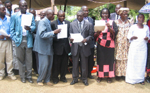
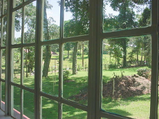
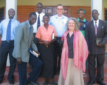
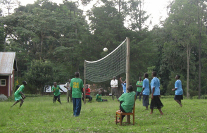
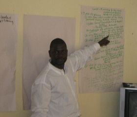

Friends Theological College (FTC) is an institution dedicated to the training of Friends pastors, as well as to the academic progress, personal development, and spiritual growth of the students whom God is calling to other ministries. Located on the Kaimosi Mission in Kenya's Hamisi District, FTC has worked since 1942 to fulfill its mission statement: "to prepare and equip leaders for Christian ministry who meet recognized professional and academic standards and are able to challenge society to live by the teachings of Christ." Together, the FTC community seeks to integrate faith, Scripture, and knowledge in training the present and future leaders of churches in East Africa; and to foster in individual hearts and lives the process of maturing in Christ.
Founded in 1942, and located in the highlands of Western Province in Kenya, Friends Theological College prepares Friends for pastoral ministry and Christian leadership in East Africa. FTC is a ministry of Friends United Meeting.
In the 2010-2011 year there are 28 students enrolled in the certificate programs, some of these in the residential program and some in the school-based program; 41 students in the diploma program, also divided between the residential and school-based programs; and 9 students seeking the Bachelor of Theology degree. These men and women come from many of the Friends churches in Kenya and from nearby countries, such as Tanzania and Rwanda.
Friends Theological College encourages academic excellence and spiritual growth, seeking to integrate faith and learning, while focusing on the process of maturing in Christ, from a Friends' (Quaker) perspective.
FTC sends forth men and women who will be:
Some FTC students are recent secondary school graduates, but most are adults with substantial experience in pastoral ministry. Instruction is in English and there is help available for those who need assistance in improving their understanding of spoken and written English.
St. Paul's University, Limuru, provides FTC students with an accredited diploma curriculum. All the coursework is taught by the FTC faculty, but the syllabus topics are provided by the St. Paul's faculty and these faculty members do the final marking of the exams. Most other colleges now require only two additional years to complete a bachelor's degree for those who have completed a recognized diploma program such as St. Paul’s.
In 2010, Friends Theological College achieved Affiliate Member status with the Accrediting Council for Theological Education in Africa (ACTEA). ). This organization is the accrediting body for theological colleges such as FTC throughout Africa. This is an important milestone on the pathway toward full accreditation. Affiliate status permits other institutions to recognize the academic work done at FTC while the process toward accreditation is underway. Upon successful completion of the ACTEA accreditation process, FTC will be accredited for all its programs.
Friends Theological College is situated on the original Kaimosi Friends Mission property where missionaries first began work in 1902. Early Friends work focused on evangelism, church planting, education, and health care. FTC is one of the products of that work, as are many other institutions in Kaimosi-- a hospital, a teacher training college, a college of technology, numerous primary and secondary schools, and the headquarters of the original body of Friends, East Africa Yearly Meeting (Kaimosi).
The unifying vision of early Friends work is expressed in a book written by one of the three pioneers of the mission, Willis Hotchkiss: “We mean to help the African so to change the conditions that surround him as to realize the highest possible ideal in the Christian life, and so make him a positive force in the advancement of the kingdom of Christ.” (Willis Hotchkiss, Sketches From the Dark Continent). The breadth of vision of these pioneers was only hinted at by the term “Friends industrial mission” used in the early days. This vision included many things, especially education for Christian ministry and leadership, as well as for a productive life, hence the leading to include theological education in the work of the mission.
Originally founded in Lugulu in 1942, FTC moved to Kaimosi in the early 1950s to continue its mission of training pastors, evangelists, educators, chaplains, and other leaders. FTC is located between Cheptulu and Shamakhokho markets, adjacent to the road between Kisumu and Eldoret. The first Friends missionaries called this location in Kaimosi the “hill of vision” and FTC students benefit from this spiritual legacy.
The beauty of the campus is enhanced by a blend of native and planted trees that are similar to the nearby Kakamega Forest. Monkeys can be seen enjoying their homes in the treetops on campus and many birds add their beautiful sounds to the campus atmosphere. Part of the campus is used to raise dairy cattle and crops to help provide food for the students.
A full range of buildings serve the needs of students, staff and faculty-- a new chapel, a new administration building, classroom buildings, library, bookstore, dining hall, and men’s and women’s hostels.
As funds permit, the next improvement in the campus will likely be the construction of a new library, allowing the present library building to be converted to classrooms.
 Since FTC exists primarily to prepare students for ministry, in the admission process students must verify that they are called to Christian ministry. Letters of recommendation from the student’s home church are required, as well as a testimony of the applicant’s Christian faith. And since FTC is a program of the Friends churches in Kenya and the Friends United Meeting, of which Kenyan Friends are a part, Friends students are given priority in admissions. But Christians of other denominations are welcome to apply as well. One of the historic testimonies of Friends is that God calls both men and women to ministry, so women are encouraged to apply. Many women have successfully completed their studies at FTC and have gone on to significant ministry and leadership. Since English is the language of instruction, applicants must be able to speak, read, and write English. Questions about admission should be directed to the FTC Registrar or Principal.
Students are encouraged to contact FTC during the academic year before they wish to enter, requesting an application packet. They will be interviewed in May of the year they expect to enroll and will be notified of the action on their application soon after.
Fees for tuition, room, board, and other costs vary among the FTC programs and the year of enrollment in the programs. Costs are comparable with those at other theological colleges in western Kenya. A current fee schedule may be obtained from the FTC Finance Office.
Before applying, students should consult the FTC code of conduct available in the current FTC catalogue. The code defines expectations of personal behavior and interactions with others, based on the principles in Scripture and on Quaker testimonies. The catalogue also contains FTC’s expectations regarding academic honesty.
Designed as a solid introduction to pastoral ministry for pastors at the village meeting level, or evangelists, youth leaders, and USFW pastors in larger churches. The certificate program includes such courses as: Introduction to Christian Theology, Bible Survey, Biblical Interpretation, Basic Pastoral Ministry, Basic Pastoral Counseling, Introduction to Quakerism, Basic Homiletics, and College Writing/Library Skills. Length of study: One year
The Certificate program is also offered as a series of courses scheduled during holiday periods of the Kenya schools. Students take twelve courses over two years. Courses are the same as in the Residential Option. Length of study: Two years
Training in this certificate program is provided in two categories. The Chaplaincy Program I is focused on service in primary and secondary school chaplaincy, including the teaching of Christian Religious Education. This category also prepares for service as chaplains in hospitals and prisons. Twelve courses are taken in the “school-based” terms in August, December, and March/April. Students engage in at least 40 hours of supervised field attachment.
The Chaplaincy Program II focuses on Theology and Development, preparing students for service as chaplains in the work place and for such ministries as micro-enterprise and NGOs. Students take six courses, normally taught in the evenings or on Saturday within the regular semesters. An internship of one or two years provides the practical experience and a pastoral reflection seminar allows students to process their learning with faculty and other students.
The certificate programs in pastoral ministry provide an entry level course of studies for those who have had limited opportunities to study previously, but are capable individuals who desire to prepare themselves more fully for various ministries. For these persons, the minimum qualification is the KCPE credential. Others have studied beyond the primary level, but have not qualified for advanced studies. With good performance in the certificate courses and passing marks on the Special Entrance Examinations, these students may progress to the diploma level.
Others who have high marks on the KSCE may choose to enroll in the certificate programs since they find the content and length of the certificate studies appropriate to their needs, their work, and their family responsibilities. Such students may particularly need to strengthen their performance in written and oral English. With successful performance at the certificate level, they may later pursue enrollment in the FTC diploma and degree programs.
Advanced certificate programs require a minimum previous preparation for ministry equivalent to the FTC certificate in pastoral ministry. Students with more advanced qualifications may also find the specialized training of the chaplaincy programs useful for their specific ministry goals.
Students study during the regular semesters for three years. The curriculum and the testing procedures are currently administered by St. Paul’s University, Limuru. The diploma program provides a rigorous theological education and intensive preparation for pastoral ministry or further study. There are thirty-six courses in the Diploma program, including the following: Old Testament, New Testament, Church History, African Christian Theology, Theological Writing, Pastoral Ministry, Missions and Evangelism, and Christian Education. For details of the curriculum, consult the FTC catalogue. Length of study: Three years
The curriculum of this program is similar to the Residential option. Instead of studying during the regular semesters, students study in one-month blocks in March/April, August, and December. Length of study: Approximately six years.
Students with KSCE marks of C plain (mean) qualify for admission upon submission of the appropriate materials and review by the FTC Registrar and Principal. Students with a KSCE of C- (mean) may be admitted provided they have C plain grades in their English and Swahili courses in secondary school. An alternate means of admission to the diploma programs is through achieving passing marks on the Special Entrance Examination administered by St. Paul’s University. This exam is normally taken while enrolled in FTC certificate courses.
The Bachelor of Theology degree is a four year programme for training pastors who will be significant leaders in the church, pastors of large urban churches, yearly meeting officials, theological college teachers, and administrators of Christian organizations. Successful completion of the degree may qualify the student for admission to master’s level theology and pastoral ministry studies.
Areas of study in this program include: Christian Theology ,Advanced Biblical Studies, Advanced Ethics, Church History, Church Management, Community Development, African Christian Theology, Pastoral Counseling, and Quaker Theology. After successful completion of their courses, students write a substantial project paper and successfully defend it before a faculty committee.
Admission requires a C+ (mean) on the KCSE or successful completion of the Diploma program at FTC or a comparable recognized theological college. At the end of their first semester of studies in the BTh program, students with previous theological study may apply for advanced standing based on the quality and scope of their previous theological training and their early performance in the BTh courses at FTC.
Each weekday begins with a chapel service, consisting of singing, prayer, short messages, and announcements. The FTC Chaplain organizes these chapel services and is available for prayer and counseling with individual students as well. On Wednesday afternoons there is a convocation, which typically is a presentation or lecture, followed by discussion. The presenters may be FTC faculty or staff, or visitors.
In the first two years, students are given ministry assignments in local Friends churches (or congregations of their own denominations). Diploma students in their third year undertake a field attachment for eight weeks under faculty supervision. In addition, all students are required to complete workshops in HIV/AIDS prevention and awareness, and in peace and conflict resolution skills.
The Edith Ratcliff Memorial Library at FTC contains about 18,000 books, periodicals, pamphlets, audio cassettes and CDs. The building is named for Edith Ratcliff in honor of her faithful service as a Friends missionary to Kenya for more than 50 years. She focused mostly on health ministries, but made significant contributions to theological education and the training of Friends for pastoral ministry.
While printed materials are the heart of the library, students may now access many resources through the library’s computers. As the internet access improves, they will be even more able to enrich their learning through access to digital versions of many theological journals and a great many documents on Quaker history and theology.
Anyone may come to the campus and use the FTC library, however borrowing privileges are only granted to currently enrolled students, faculty and staff. There is no charge for the day use of the FTC library facilities.
A significant part of the library’s materials have come from the generosity of interested persons in the Friends constituency who wished to strengthen the preparation of FTC students. Among some of these gifts have been:
• Books on peace, social justice, women's issues, and human rights from.Dr. Paul Knitter, Professor Emeritus at Xavier University in Cincinnati, Ohio.
• Books purchased with funds from the Pennies for Peace Fund administered by the United Society of Friends Women in Indiana Yearly Meeting.
Friends who wish to contribute new or used books in good condition may contact the FTC principal about the suitability of these gifts and ways to get them to FTC.
Financial contributions for library cataloging supplies may be sent to Friends United Meeting earmarked for "FTC Library Materials." Please inform the FTC Principal of your gift by email or letter.
The book shop has expanded its stock of books and other supplies to more effectively meet the needs of FTC students and staff, while also providing resources for the nearby Friends churches and others. Its inventory includes Bibles, song books, writing materials, FTC shirts, and new and used Christian books. Its director, Eunice Ayuma, is working to expand the materials available. Books and other supplies may be ordered by phone (+254 720 891 644), with payment through M-PESA.
Among the books and pamphlets on hand are these written by Mary Kay Rehard, a former FUM field staff member:
• Signs of a Healthy Church: Pathway to the Future for Friends
• Acacia Reflections: The First Year in Africa
• Simple Gifts: Household Ecology in Africa
• Stars in Africa
The logo of Friends Theological College depicts the Risen Christ, featuring colors and designs common in African cultures Many thanks to Larry Clarkberg, of Ithaca, New York, who designed the logo.
Ann Riggs, Principal and Academic Dean
Meshack Musindi, Dean of Students
Pamela Igesa, Chaplain
Fredrick Mushira, Librarian
Perucy Ongalo, Registrar
Josphat Lime Jiveti, Finance Officer
Ann Riggs, Annapolis Monthly Meeting, Baltimore Yearly Meeting, was educated at Smith College (BA), the University of North Carolina at Chapel Hill (MA), the Divinity School of Duke University (MDiv and ThM), and the School of Religious Studies of the Catholic University of America (PhD). Before coming to FTC she had taught theological students at the bachelor’s, master’s, and doctoral levels and served as Associate General Secretary at the National Council of Churches USA. She has published essays on Christian ethics, Christian unity, and the relationship between Christian theology and culture.
Friends Theological College is a ministry of Friends United Meeting, a grouping of Friends yearly meetings in East Africa and the United States. FTC is governed by a Board of Governors made up of members of the Friends yearly meetings in East Africa. The board and the FTC staff work closely with the leadership of Friends United Meeting on strategic planning, policy formation, and financial accountability. FUM appoints the FTC Principal, in consultation with the Board of Governors. The FUM General Secretary and Clerk regularly visit FTC.
Is there a “typical” FTC student? Yes and no. They are men and women from many different parts of Kenya and adjoining countries. Their ages vary dramatically, since some may have recently completed secondary school and some have raised their families and have been involved in ministry for many years. All share a commitment to Christ and to Christian ministry. All come to FTC prepared to study, to interact with other students, faculty, and staff, and engage in physical work on the campus to earn some of their fees.
Visitors are welcome at the college, to read in the library and to attend events such as convocations and chapel services. FTC also organizes non-credit workshops on topics important to serving in the church, especially focused on Friends pastors. Some of these are held on the Kaimosi campus and some in other locations.
Friends from East Africa and from other parts of the world are encouraged to support FTC through general fund gifts, gifts for student scholarships, and support for special projects. Those wishing to visit FTC are welcome and by prior contact may arrange for a tour of the campus. They may also attend one of the workshops on subjects of general interest to Christian leaders. Those contributing from the United States may do so through Friends United Meeting, designating their gifts for Friends Theological College. Those wishing to donate items of possible use to FTC or to designate contributions for particular needed items, may contact the staff of Friends United Meeting or the FTC principal for information.
Ann Riggs, Principal
Friends Theological College
PO Box 9, TIRIKI 50309 KENYA
Telephone: +254 0734728564
annkriggs@gmail.com ftc1@FUM.org
Joshphat Live Jiveti, Finance Officer
ftckaimosi@gmail.com
Friends United Meeting Field Staff
101 Quaker Hill Dr, Richmond IN 47374-1980 USA
765-962-7573 765-962-7573
Questions, comments, suggestions about this web page may be directed to: Philip Garrison, garrison.philip.m+ftc@gmail.com.